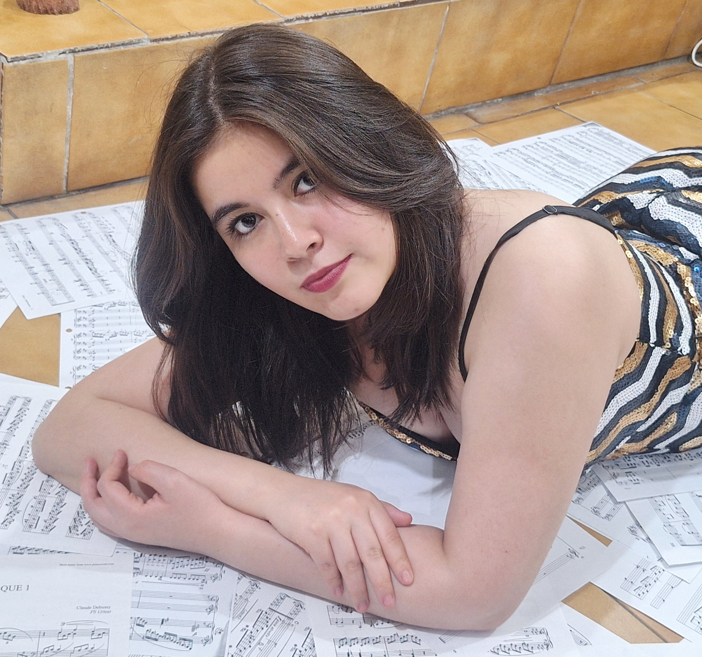

Pasión, técnica y emoción en cada nota.

Originaria de Tehuacán, Puebla, el canto ha sido el motor de mi vida. Actualmente busco una formación integral cursando la Licenciatura en Música y la Licenciatura en Educación Musical.
Mi objetivo no es solo interpretar una pieza, sino transformar un instante en un recuerdo imborrable, compartiendo la sensibilidad de la voz humana tanto en los escenarios como a través de la pedagogía musical.
Un camino de constante aprendizaje y dedicación
Inició sus estudios formales en la Universidad Veracruzana a los 18 años, donde continúa su formación técnica y vocal bajo la guía de reconocidos maestros.
Complementa su preparación con el Diplomado Teórico-Práctico de Música Vocal Mexicana y estudios especializados en música barroca.
Ha participado en clases magistrales con figuras de talla nacional e internacional como María Katzarava, Encarnación Vázquez, Jesús Suaste y Carlos Conde, entre otros.
Cuenta con experiencia escénica presentándose en importantes recintos como el Museo de la Mujer en CDMX, el Teatro Xicoténcatl en Tlaxcala y el Museo de la Música Veracruzana.
Actualmente forma parte del Estudio Coral Ayotli, desarrollando su interpretación tanto en el ámbito coral como en su faceta de solista.